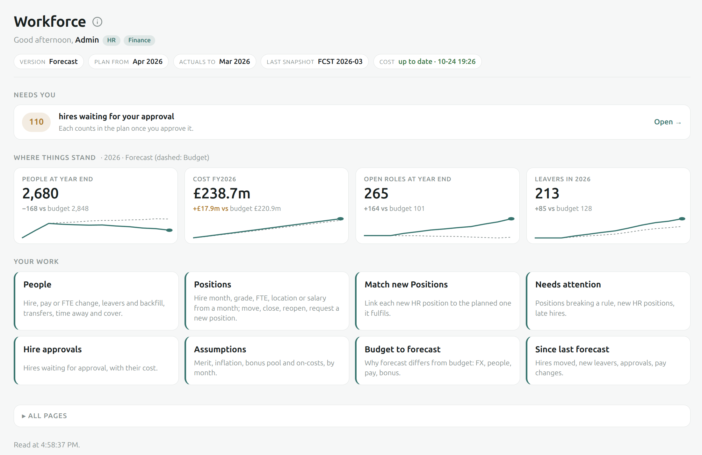
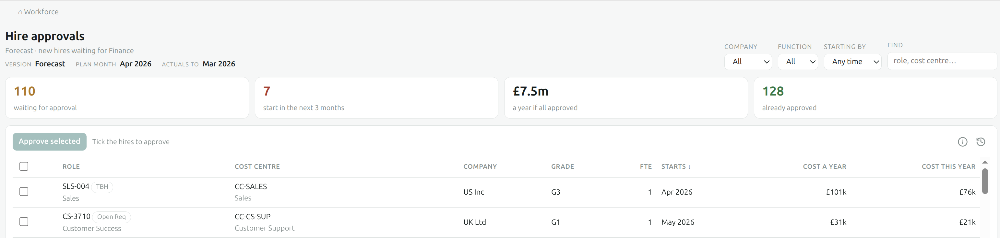
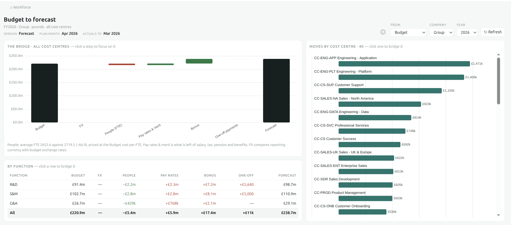
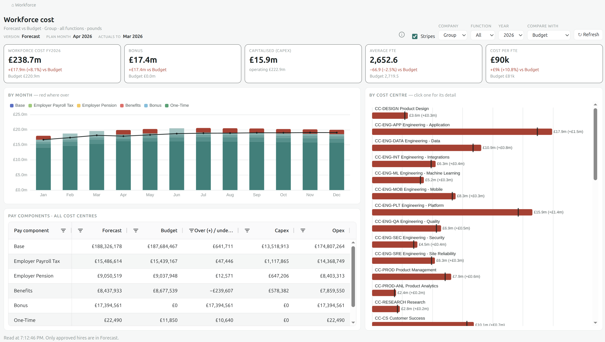
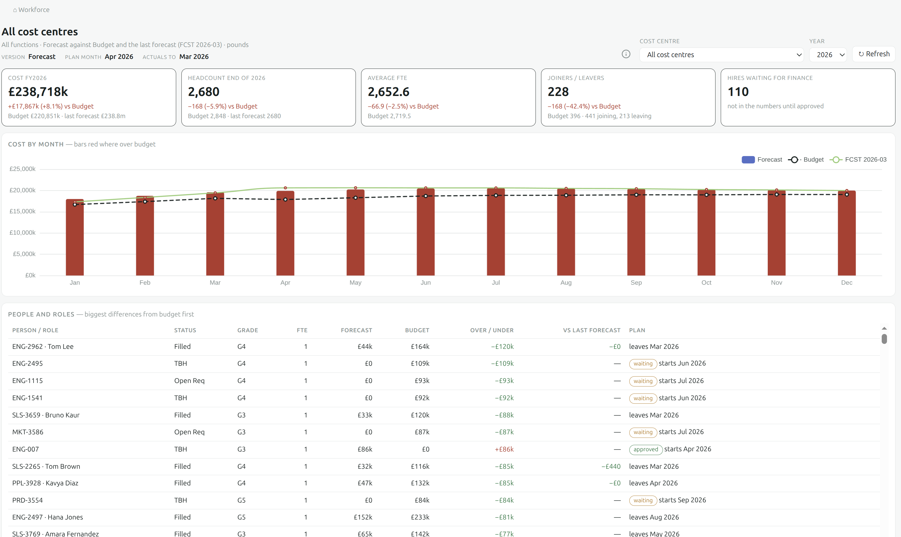

A new UI for planning
A Lens is a planning screen built as an HTML page, running on a TM1 model. This article shows what they can do, using a Workforce Planning application built on TM1 v11.
The application has 14 pages, covering people and Positions, hiring and approvals, matching the plan to HR, handovers and transfers, assumptions, cost, headcount and variance.
How it fits together
A Lens page is stored inside TM1. The browser runs the page; a small Lens server passes its requests to TM1 as the signed-in person; TM1 holds the data, rules, processes and security.
as the viewer
- The page is a single HTML file stored inside the TM1 model (TM1 Applications), so it travels with the model. The Workforce page source is also kept in this repository.
- The Lens kit is a shared set of components — charts, the grid, the pivot, cards, forms, History, who is on the page. The grid and pivot are the same ones the IDE’s View Editor uses. A component change reaches every page after the kit is rebuilt.
- The Lens server passes each request to TM1 as the signed-in user. A page must declare the processes it runs; anything else is refused.
- TM1 holds the logic. Calculations are in rules and TI. Every workflow change — hire, transfer, match, approve, set a hire month — is a TI process that checks it and refuses with a reason, written to a small Lens Messages cube the page reads back. Planning input, like assumptions, is an ordinary cell write under TM1 cell security.
The pages are built by describing them to an AI, which uses the TM1 MCP server. The MCP is a build tool; it is not used by the running page.
What a Lens offers
- Charts: a waterfall, stacked bars, names above long bars. Click a cost-centre bar and the rest of the page follows.
- Number formats: £k, £m, “Sep 2026”, +/− signs — chosen per column.
- Grid: status pills; approved rows lock; typed but unsaved cells are highlighted; right-click for how a cell is calculated, who changed it, and notes.
- Selectors: lists built from the model — only open months, only cost centres in your function.
- Cards: filter the table below; click again to clear.
- Reporting is interactive: a card, bar or waterfall step re-filters the page; a new version or comparison redraws it.
- Layout: placed for the job, down to a phone.
- Workflow on the screen: hire, match or approve where you are looking, with your selection already made.
- Actions: forms fill the process parameters; if TM1 refuses, the page shows why.
- Screens by role: Home lists the pages for the viewer’s role.
- Security: TM1’s own server security; the page sees what TM1 lets that user see, and actions run as the user.
- History: saves and process runs — who, when; refused process runs too.
- Working together: some pages show who else is on the page.
The pages
The screens are built around the task. A selected person changes the actions; a planned hire shows hire month, cost and approval in one row; a bridge step re-ranks the cost centres.
Home
Home lists the pages for the viewer’s role. The work waiting for them is at the top, with the headline figures below.

People
People lists everyone holding a Position, with cost centre, FTE and pay. The cards count the groups; clicking one filters the grid.
Changes start from the row: hire, pay or FTE, leaver and backfill, transfer, time away, cover. If the person already holds a Position, the page asks whether this is a transfer or a company move, so they count once.

Positions
Positions lists every Position — filled, vacant, planned hire, closed or created by planning. A card shows only that group.
Set a hire month on an empty row; TM1 refuses if someone is there that month or the Position is closed. The row shows approval, and the actions change grade, FTE, location or salary, move, close or reopen, or request a new Position. History records each change.

Position assignments
A Position and the person in it are separate. The Position is the job; the assignment holds the start and end months, FTE share and salary. Two people can share a Position or overlap in a handover; cover can sit alongside an absence; a transfer ends one assignment and starts another. Cost is calculated per assignment.
Handover
A replacement can start before the leaver goes. Mark a handover and set the overlap: both people are counted and costed, and the Position shows In handover rather than over-filled. Without the mark, Needs attention shows it as over-filled.
Transfers, leavers and cover
A transfer moves the same person to another Position; TM1 ends the old assignment and starts the new one, with the history kept. A company move is a leaver plus a hire into a new Position in the new company, with its tax rules. A leaver can have a planned replacement; leave stays counted, and cover can be added.
Approvals
Hire approvals is Finance’s queue of planned hires, with what each costs this year and a year. Tick the rows and approve. Until a hire is approved it is not in headcount or cost; a later change to its hire month clears the approval.

Matching new HR Positions
When HR creates a Position, the page suggests the planned hire it might fulfil, using company, cost centre, grade and hire month. A person confirms the match; it can be undone. The hire counts once.
Needs attention
The control checks show Positions holding more FTE than they have, people over 1.0 FTE across Positions, and anyone in a Position that is closed that month. A card filters to one check. After a change the page shows Cost up to date or Cost updating…; History records saves and process runs.
Budget to forecast
A waterfall from budget to forecast, split into FX, people, pay rates, bonus and one-offs, with the function table and the cost centres that moved. Click a step to re-rank the cost centres; click one to see its bridge.

By location — an Alternate Hierarchy
Positions are owned by cost centres, but people also want them by city, country and region. TM1 can hold a second hierarchy on the same dimension, so the same Positions roll up a different way with no copied data. The By Location hierarchy is built by TI from each Position’s Location and runs after every HR load and recalculation. Totals by location equal the company totals. On Headcount you switch between the two views.

Other pages
The rest uses the same parts: Workforce cost, Workforce KPIs, My cost centre and Pay & grades. Assumptions is the input page for merit, promotion and bonus pool by month.




Appendix: the workforce model
For TM1 readers: the model mechanics behind the screens.
Objects
| Object | What it is |
|---|---|
| Position | A budgeted slot: company, cost centre, grade, FTE. It exists whether or not anyone is in it, and never changes company. |
| Person | An employee or contractor. Tenure and pay do not live on the Position. |
| Assignment | A Person holding a Position from a start to an end month, at an FTE and salary. Pay and tenure live here. |
| TBH Position | A Position the plan needs that HR has not created yet, with its own lifecycle and matching. |
FX
Each company plans in its own currency (GBP, USD, NZD); cost is held in local and reporting currency. Reports are in pounds at the forecast rate.
Moves
A cost-centre move is dated; earlier months stay under the old cost centre. A company move is a leaver plus a hire into a new Position in the new company, which brings its own tax rules; the old Position closes.
Tax on the person
Payroll tax is held per person in WFP Person Tax. A same-company transfer carries year-to-date earnings; a company move starts a new payroll year.
Tax year and employer tax illustrative rates in the demo model
UK and NZ start in April; US-NY in January. Thresholds and caps apply within the tax year, and Obl 2026 holds earnings and tax from before the plan starts. Employer tax is calculated on year-to-date earnings, so a month’s cost depends on the months before it.
| Jurisdiction | Tax year starts | Employer payroll tax in the model |
|---|---|---|
| UK | April (6 April – 5 April) | 13.8% above £9,100 |
| US-NY | January | 9.0% up to $168,600; 1.45% above |
| NZ | April | 1.6% up to NZ$142,283; nothing above |
These are illustrative rates in the demo model, not current law. In a monthly model April is tax month 1, as payroll counts it.
Employee tax and net pay
Employee income tax and net pay are not a company cost; they are in the model for payroll cash forecasting. Employer Payroll Tax is the employer cost.
Costing in TI
Base cost is built per assignment, month by month; payroll tax is run per person; on-costs are rules on Base. It is TI because it runs across every assignment and month, too heavy for a rule. Each action calls WFP Request Recalculation; the WFP Recalculate Cost chore runs every five minutes. The full Base + tax + post takes about 90 seconds, and the pages show Cost up to date or Cost updating….
People mechanics
- Assignment. The assignment, not the Position, holds tenure and pay. Main section.
- Handover. A replacement starts before the leaver goes; both count and are paid during the marked overlap. Main section.
- Cover. A second person covers while the holder is away; cover is flagged and only allowed then. Main section.
- Time away. The person stays in headcount and is paid the absence pay %; cover can be added. Main section.
Control checks
These run as assertions and on the Needs attention page:
- Nobody over 1.0 FTE across Positions (Over-booked).
- No Position holding more people than its FTE (Over-filled), except a marked handover or cover while someone is away.
- Nobody assigned to a Position in a month it does not exist.
- No assignment record that ends before it starts.
- No HRIS Position linked to more than one TBH; no matched TBH counting in an open month.
- Every new HR Position is matched or flagged Unplanned; every approved TBH past its hire month is matched or flagged Late hire.